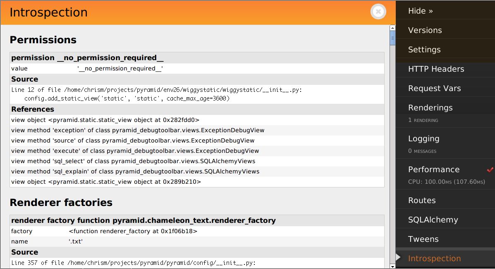

New in version 1.3.
When Pyramid starts up, each call to a configuration directive causes one or more introspectable objects to be registered with an introspector. The introspector can be queried by application code to obtain information about the configuration of the running application. This feature is useful for debug toolbars, command-line scripts which show some aspect of configuration, and for runtime reporting of startup-time configuration settings.
Here's an example of using Pyramid's introspector from within a view callable:
1 2 3 4 5 6 7 8 9 | from pyramid.view import view_config
from pyramid.response import Response
@view_config(route_name='bar')
def show_current_route_pattern(request):
introspector = request.registry.introspector
route_name = request.matched_route.name
route_intr = introspector.get('routes', route_name)
return Response(str(route_intr['pattern']))
|
This view will return a response that contains the "pattern" argument provided to the add_route method of the route which matched when the view was called. It uses the pyramid.interfaces.IIntrospector.get() method to return an introspectable in the category routes with a discriminator equal to the matched route name. It then uses the returned introspectable to obtain a "pattern" value.
The introspectable returned by the query methods of the introspector has methods and attributes described by pyramid.interfaces.IIntrospectable. In particular, the get(), get_category(), categories(), categorized(), and related() methods of an introspector can be used to query for introspectables.
Introspectable objects are returned from query methods of an introspector. Each introspectable object implements the attributes and methods documented at pyramid.interfaces.IIntrospectable.
The important attributes shared by all introspectables are the following:
title
A human-readable text title describing the introspectable
category_name
A text category name describing the introspection category to which this introspectable belongs. It is often a plural if there are expected to be more than one introspectable registered within the category.
discriminator
A hashable object representing the unique value of this introspectable within its category.
discriminator_hash
The integer hash of the discriminator (useful for using in HTML links).
type_name
The text name of a subtype within this introspectable's category. If there is only one type name in this introspectable's category, this value will often be a singular version of the category name but it can be an arbitrary value.
action_info
An object describing the directive call site which caused this introspectable to be registered; contains attributes described in pyramid.interfaces.IActionInfo.
Besides having the attributes described above, an introspectable is a dictionary-like object. An introspectable can be queried for data values via its __getitem__, get, keys, values, or items methods. For example:
1 2 | route_intr = introspector.get('routes', 'edit_user')
pattern = route_intr['pattern']
|
The list of concrete introspection categories provided by built-in Pyramid configuration directives follows. Add-on packages may supply other introspectables in categories not described here.
subscribers
Each introspectable in the subscribers category represents a call to pyramid.config.Configurator.add_subscriber() (or the decorator equivalent); each will have the following data.
subscriber
The subscriber callable object (the resolution of the subscriber argument passed to add_susbcriber).interfaces
A sequence of interfaces (or classes) that are subscribed to (the resolution of the ifaces argument passed to add_subscriber).derived_subscriber
A wrapper around the subscriber used internally by the system so it can call it with more than one argument if your original subscriber accepts only one.predicates
The predicate objects created as the result of passing predicate arguments to add_susbcriberderived_predicates
Wrappers around the predicate objects created as the result of passing predicate arguments to add_susbcriber (to be used when predicates take only one value but must be passed more than one).
response adapters
Each introspectable in the response adapters category represents a call to pyramid.config.Configurator.add_response_adapter() (or a decorator equivalent); each will have the following data.
adapter
The adapter object (the resolved adapter argument to add_response_adapter).type
The resolved type_or_iface argument passed to add_response_adapter.
root factories
Each introspectable in the root factories category represents a call to pyramid.config.Configurator.set_root_factory() (or the Configurator constructor equivalent) or a factory argument passed to pyramid.config.Configurator.add_route(); each will have the following data.
factory
The factory object (the resolved factory argument to set_root_factory).route_name
The name of the route which will use this factory. If this is the default root factory (if it's registered during a call to set_root_factory), this value will be None.
session factory
Only one introspectable will exist in the session factory category. It represents a call to pyramid.config.Configurator.set_session_factory() (or the Configurator constructor equivalent); it will have the following data.
factory
The factory object (the resolved factory argument to set_session_factory).
request factory
Only one introspectable will exist in the request factory category. It represents a call to pyramid.config.Configurator.set_request_factory() (or the Configurator constructor equivalent); it will have the following data.
factory
The factory object (the resolved factory argument to set_request_factory).
locale negotiator
Only one introspectable will exist in the locale negotiator category. It represents a call to pyramid.config.Configurator.set_locale_negotiator() (or the Configurator constructor equivalent); it will have the following data.
negotiator
The factory object (the resolved negotiator argument to set_locale_negotiator).
renderer factories
Each introspectable in the renderer factories category represents a call to pyramid.config.Configurator.add_renderer() (or the Configurator constructor equivalent); each will have the following data.
name
The name of the renderer (the value of the name argument to add_renderer).factory
The factory object (the resolved factory argument to add_renderer).
routes
Each introspectable in the routes category represents a call to pyramid.config.Configurator.add_route(); each will have the following data.
name
The name argument passed to add_route.pattern
The pattern argument passed to add_route.factory
The (resolved) factory argument passed to add_route.xhr
The xhr argument passed to add_route.request_method
The request_method argument passed to add_route.request_methods
A sequence of request method names implied by the request_method argument passed to add_route or the value None if a request_method argument was not supplied.path_info
The path_info argument passed to add_route.request_param
The request_param argument passed to add_route.header
The header argument passed to add_route.accept
The accept argument passed to add_route.traverse
The traverse argument passed to add_route.custom_predicates
The custom_predicates argument passed to add_route.pregenerator
The pregenerator argument passed to add_route.static
The static argument passed to add_route.use_global_views
The use_global_views argument passed to add_route.object
The pyramid.interfaces.IRoute object that is used to perform matching and generation for this route.
authentication policy
There will be one and only one introspectable in the authentication policy category. It represents a call to the pyramid.config.Configurator.set_authentication_policy() method (or its Configurator constructor equivalent); it will have the following data.
policy
The policy object (the resolved policy argument to set_authentication_policy).
authorization policy
There will be one and only one introspectable in the authorization policy category. It represents a call to the pyramid.config.Configurator.set_authorization_policy() method (or its Configurator constructor equivalent); it will have the following data.
policy
The policy object (the resolved policy argument to set_authorization_policy).
default permission
There will be one and only one introspectable in the default permission category. It represents a call to the pyramid.config.Configurator.set_default_permission() method (or its Configurator constructor equivalent); it will have the following data.
value
The permission name passed to set_default_permission.
views
Each introspectable in the views category represents a call to pyramid.config.Configurator.add_view(); each will have the following data.
name
The name argument passed to add_view.context
The (resolved) context argument passed to add_view.containment
The (resolved) containment argument passed to add_view.request_param
The request_param argument passed to add_view.request_methods
A sequence of request method names implied by the request_method argument passed to add_view or the value None if a request_method argument was not supplied.route_name
The route_name argument passed to add_view.attr
The attr argument passed to add_view.xhr
The xhr argument passed to add_view.accept
The accept argument passed to add_view.header
The header argument passed to add_view.path_info
The path_info argument passed to add_view.match_param
The match_param argument passed to add_view.csrf_token
The csrf_token argument passed to add_view.callable
The (resolved) view argument passed to add_view. Represents the "raw" view callable.derived_callable
The view callable derived from the view argument passed to add_view. Represents the view callable which Pyramid itself calls (wrapped in security and other wrappers).mapper
The (resolved) mapper argument passed to add_view.decorator
The (resolved) decorator argument passed to add_view.
permissions
Each introspectable in the permissions category represents a call to pyramid.config.Configurator.add_view() that has an explicit permission argument to or a call to pyramid.config.Configurator.set_default_permission(); each will have the following data.
value
The permission name passed to add_view or set_default_permission.
templates
Each introspectable in the templates category represents a call to pyramid.config.Configurator.add_view() that has a renderer argument which points to a template; each will have the following data.
name
The renderer's name (a string).type
The renderer's type (a string).renderer
The pyramid.interfaces.IRendererInfo object which represents this template's renderer.
view mapper
Each introspectable in the permissions category represents a call to pyramid.config.Configurator.add_view() that has an explicit mapper argument to or a call to pyramid.config.Configurator.set_view_mapper(); each will have the following data.
mapper
The (resolved) mapper argument passed to add_view or set_view_mapper.
asset overrides
Each introspectable in the asset overrides category represents a call to pyramid.config.Configurator.override_asset(); each will have the following data.
to_override
The to_override argument (an asset spec) passed to override_asset.override_with
The override_with argument (an asset spec) passed to override_asset.
translation directories
Each introspectable in the asset overrides category represents an individual element in a specs argument passed to pyramid.config.Configurator.add_translation_dirs(); each will have the following data.
directory
The absolute path of the translation directory.spec
The asset specification passed to add_translation_dirs.
tweens
Each introspectable in the tweens category represents a call to pyramid.config.Configurator.add_tween(); each will have the following data.
name
The dotted name to the tween factory as a string (passed as the tween_factory argument to add_tween).factory
The (resolved) tween factory object.type
implict or explicit as a string.under
The under argument passed to add_tween (a string).over
The over argument passed to add_tween (a string).
static views
Each introspectable in the static views category represents a call to pyramid.config.Configurator.add_static_view(); each will have the following data.
name
The name argument provided to add_static_view.spec
A normalized version of the spec argument provided to add_static_view.
traversers
Each introspectable in the traversers category represents a call to pyramid.config.Configurator.add_traverser(); each will have the following data.
iface
The (resolved) interface or class object that represents the return value of a root factory that this traverser will be used for.adapter
The (resolved) traverser class.
resource url adapters
Each introspectable in the resource url adapters category represents a call to pyramid.config.Configurator.add_resource_url_adapter(); each will have the following data.
adapter
The (resolved) resource URL adapter class.resource_iface
The (resolved) interface or class object that represents the resource interface that this url adapter is registered for.request_iface
The (resolved) interface or class object that represents the request interface that this url adapter is registered for.
The Pyramid debug toolbar (part of the pyramid_debugtoolbar package) provides a canned view of all registered introspectables and their relationships. It looks something like this:
You can disable Pyramid introspection by passing the flag introspection=False to the Configurator constructor in your application setup:
from pyramid.config import Configurator
config = Configurator(..., introspection=False)
When introspection is False, all introspectables generated by configuration directives are thrown away.